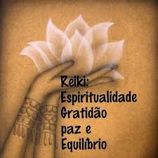

Reiki é uma técnica considerada como terapia integrativa, em que o terapeuta (ou mestre reikiano) estende suas mãos sob partes do corpo do paciente para canalizar energia vital universal, a fim de restaurar o equilíbrio físico, regularizar suas funções vitais e equilibrar o campo mental e emocional.
Após tempos de desconhecimento e preconceito, a terapia é atualmente reconhecida pela OMS – Organização Mundial da Saúde – e está entre os procedimentos adotados pelo SUS – Sistema Único de Saúde.
A filosofia e importância prática do Reiki vem conquistando cada vez mais respeito e reconhecimento de pessoas e órgãos de saúde pública. Apesar de ter sido criado em 1922 pelo monge budista japonês, Mikao Usui, a OMS – Organização Mundial da Saúde – reconheceu o Reiki há apenas uma década, e agora, há pouco mais de um ano, o Ministério da Saúde publicou no Diário Oficial da União a Portaria 849, incluindo-o como uma prática integrativa na “Tabela de Procedimentos” oferecidos pelo Sistema Único de Saúde (SUS), na categoria de “ações de promoção e prevenção em saúde”.
🙏 REI: é a Sabedoria Universal (Divino)
🌟 KI: Energia Vital (todos serves vivos)
Reiki é um MÉTODO que permite transmitir essa energia principalmente pelas mãos através de símbolos e sons específicos de mantras.
Reiki é simples, após a pessoa ser INICIADA pode captar e transmitir a energia.
O Reiki é um "mistério" e funciona, apesar de ainda não ser totalmente explicado pela ciência tradicional.
Reiki foi (re)descoberto por Mikao Usui em Kioto, no Japão em 1922, após um período de 21 dias de meditação no monte Kurama.
Alega-se que através de uma revelação mística, Usui ganhou conhecimento e poder espiritual que podia aplicar a outros e que ele apelidou de Reiki e que dizia entrar pelo seu corpo através do seu Chacra Coroa.
Em abril de 1922, Usui mudou-se para Tokio onde fundou o Usui Reiki Ryōhō Gakkai ("臼井靈氣療法學會"), que significa "Sociedade do Método de Energia Espiritual Terapêutica de Usui")para assim continuar alegadamente a tratar pessoas com o Reiki.
De acordo com as inscrições no seu túmulo, Usui ensinou o seu sistema de Reiki a mais de 2000 pessoas durante a sua vida e dezesseis dos seus alunos continuaram o seu treino para chegar ao terceiro nível. Enquanto ensinava Reiki em Fukuyama (福山市, Fukuyama-shi), Usui sofreu um enfarte e morreu a 9 de março de 1926.
Os 5 Princípios do Reiki são os corolários da obra de Mikao Usui, correspondendo à "psicossomática" do Reiki, o que é fundamental no Reiki.
Kyo Dake Wa (Só por hoje)
1. Só por hoje, não se irrite 💆
2. Só por hoje, não se preocupe 🙇
3. Só por hoje, expresse a sua Gratidão 🙏
4. Só por hoje, faça o seu trabalho com dedicação 👌
5. Só por hoje, seja Gentil 💖
“Reiki é amor e onde existe amor existe sempre milagres”(Johnny De Carli)